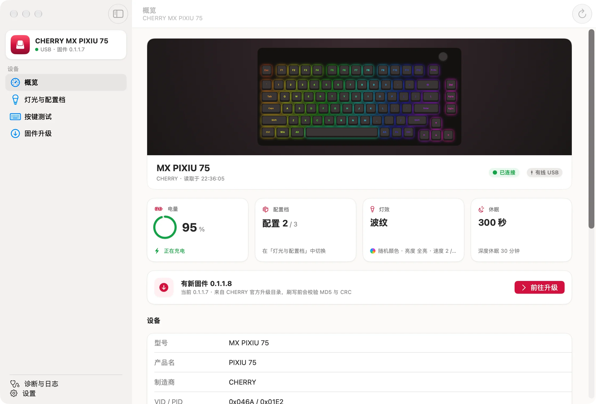
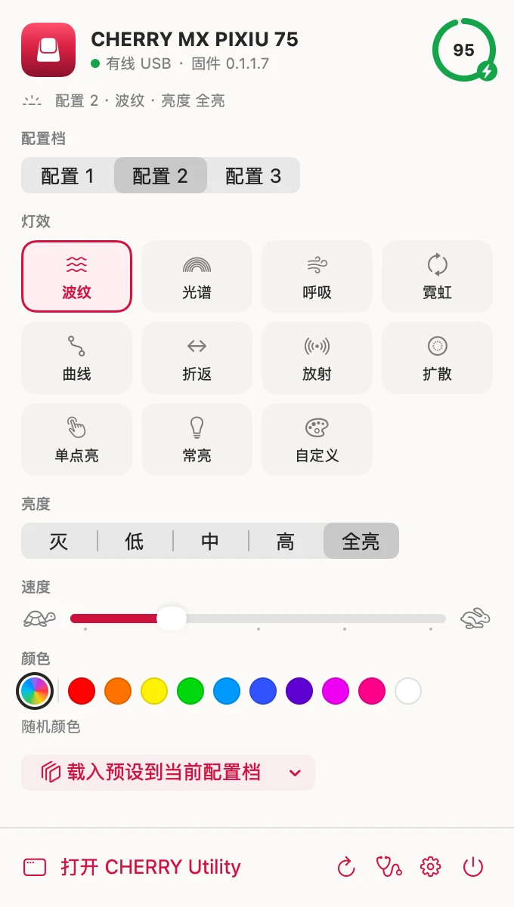
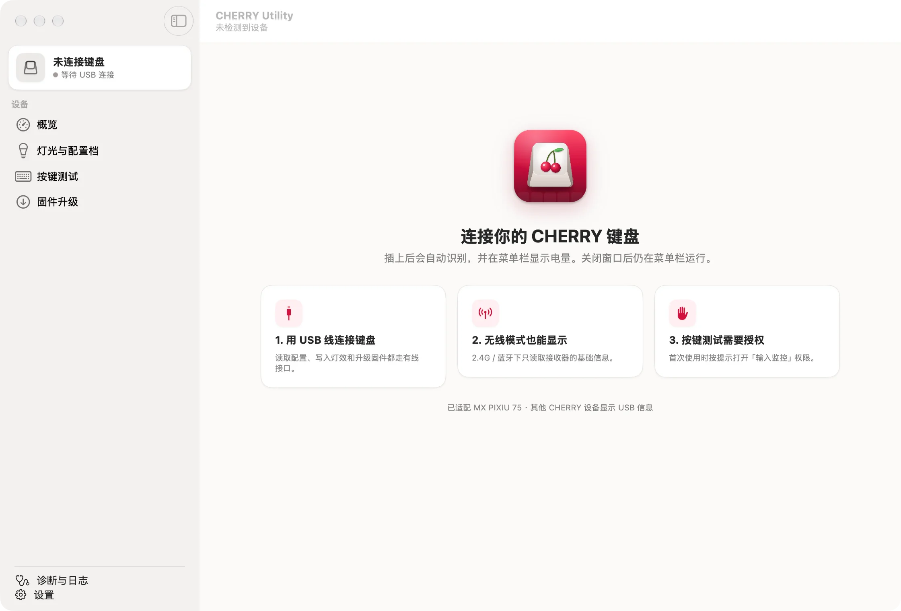
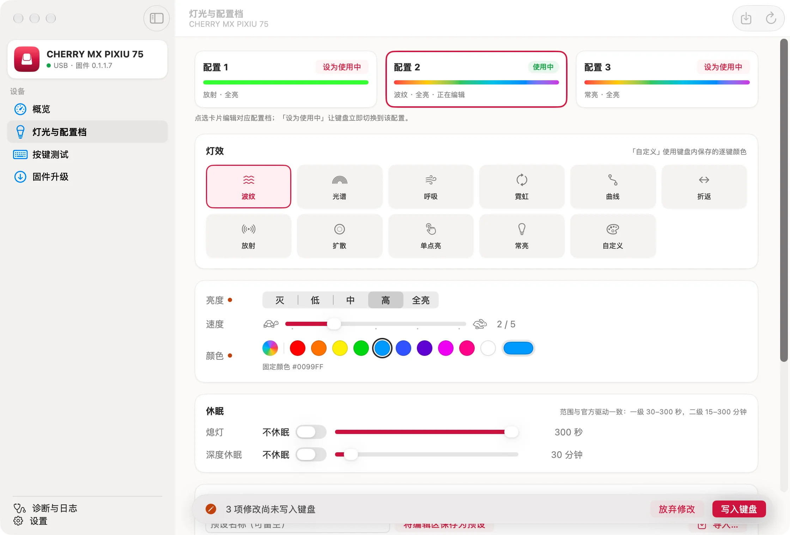
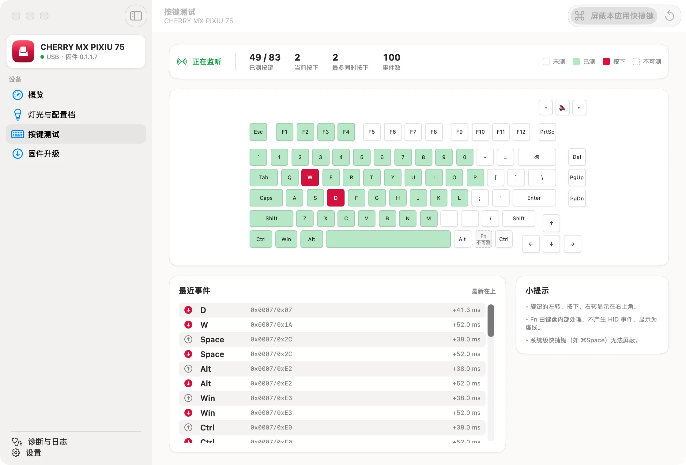
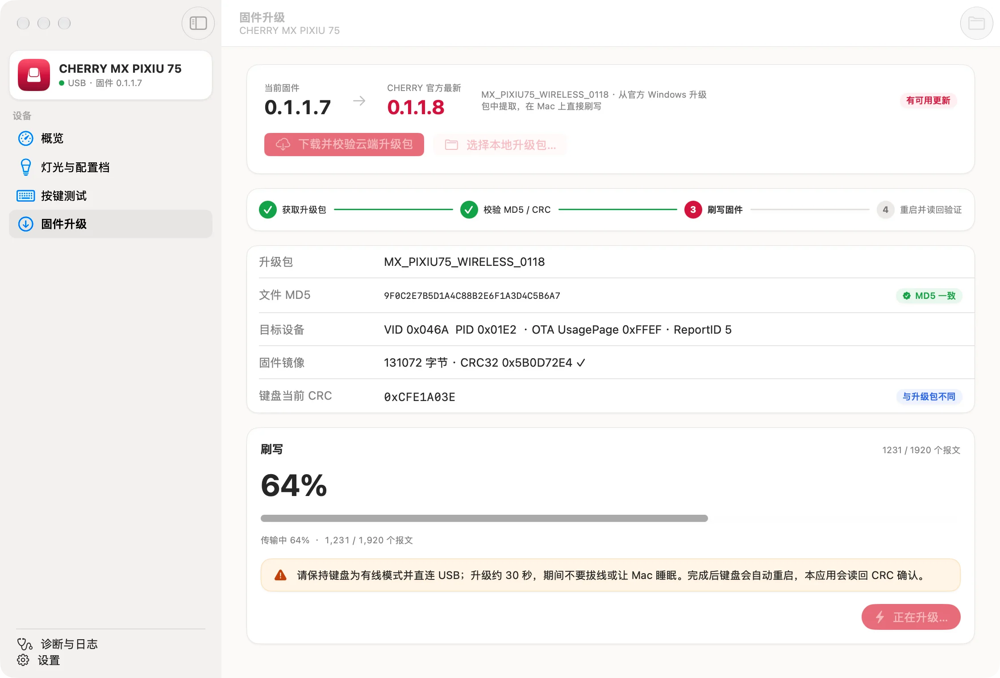
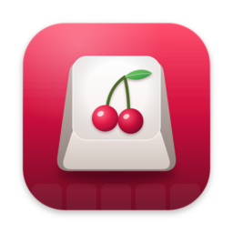

菜单栏常驻
电量一眼可见。切换配置档、灯效、亮度和颜色不用打开窗口，关掉主窗口也一直在。
灯效、配置档、按键测试与固件升级——官方驱动只有 Windows 版，现在 Mac 上也有了。原生 macOS 应用，常驻菜单栏，随手切换灯光。
下载命令行工具 cherryzip · {{CLI_SIZE}} · 解压后放进 PATH 中的目录即可使用
或用 Homebrewbrew install --cask {{GITHUB_OWNER}}/tap/cherry-utility


所有修改都通过键盘自己的配置协议写入，拔下键盘接到其他电脑上同样生效。
电量一眼可见。切换配置档、灯效、亮度和颜色不用打开窗口，关掉主窗口也一直在。
3 个板载配置档逐项编辑：11 种灯效、亮度、速度、颜色和休眠。修改先放在草稿里，确认后才写入。
把喜欢的灯光存成预设，载入任意配置档；导出 .cherryprofile 文件，分享给其他 Mac。
在真实键位图上实时显示按下与已测按键，包括旋钮；统计最多同时按下的键数和事件间隔。
直接使用 CHERRY 官方升级包：校验 MD5 与 CRC 后通过 USB 刷写，键盘重启后读回核对。
10 个动作：读取状态和电量、切换配置档、调灯效 / 亮度 / 颜色 / 休眠、载入预设。可以放进快捷指令自动化，也能在 Spotlight 里直接输入「切换配置档」运行。
cherry status、cherry set --effect 呼吸，写进脚本就能用。可以单独下载；应用在运行时经由它执行，没运行时直接连接键盘。
cherry mcp 让 Claude Code、Claude Desktop 等 AI 客户端读取和设置键盘。在「设置 › 自动化」里一键添加到 Claude Desktop；不提供固件操作。
没有账号、没有统计上报。诊断记录只保存在本机，由你决定是否导出分享。
从安装到写入第一个灯效配置，跟着下面的步骤做就行。
下载 DMG，把 CHERRY Utility 拖进「应用程序」文件夹后打开。用 USB 线连接键盘，并把键盘拨到有线模式。

点一下菜单栏的键帽图标：切换配置档 1 / 2 / 3，选择灯效，拖动亮度和速度，点一个颜色——改动立即生效。
打开主窗口的「灯光与配置档」，点选要编辑的配置档。修改过的项目会标上橙点，底部提示还有几项没写入。

打开「按键测试」，第一次使用时按提示在「系统设置 › 隐私与安全性 › 输入监控」中允许 CHERRY Utility，然后逐个按键。

「固件升级」会对比键盘当前版本和 CHERRY 官方目录中的最新版本。下载并校验升级包后点「开始升级」，大约 30 秒。

三个入口与菜单栏共用同一套校验和写入逻辑，改完立即同步到菜单栏；固件操作不对自动化开放。
PIXIU 75 已在真机验证；其余型号按 CHERRY 官方驱动中的数据适配，只写入官方驱动同样会写的字段，尚未在真机上验证。固件刷写目前只支持 PIXIU 75 系列，其他型号请使用官方升级程序。
CHERRY Utility 以 MIT 许可证开源：Swift 6、SwiftUI 与 TCA，六边形架构，内置模拟键盘，不接键盘也能运行和测试。
你的型号能不能用、遇到了问题、想要新功能，都欢迎在 GitHub 上告诉我们。
给 Mac 用户的 CHERRY 键盘工具（非官方）：灯效、配置档、按键测试、固件升级，以及快捷指令、命令行和 MCP 自动化。
不是。这是一个独立开发的非官方工具，给使用 Mac 的 CHERRY 键盘用户。它通过与官方 Windows 驱动相同的 USB 配置协议工作，但与 CHERRY 没有任何关联，也不代表 CHERRY。
只有「按键测试」需要它：macOS 要求应用获得这个权限才能读取键盘发出的按键报文。应用不会记录或上传按键内容。不使用按键测试时可以不授权。
升级使用 CHERRY 官方发布的升级包。刷写前会校验文件 MD5 与固件 CRC，并确认升级包与键盘型号匹配；刷写后读回 CRC 核对。过程中请保持有线连接，不要拔线。应用内升级目前只支持 PIXIU 75 系列，其他型号的升级方式会在「固件升级」页说明。
它可以在原厂固件上修改部分行为，例如固定 F 区的功能键逻辑，目前适用于 PIXIU 75 与 PIXIU 75 宝可梦版。这是实验性功能，默认隐藏，需要在「设置 › 实验性功能」中确认风险后才会出现，并且随时可以恢复原厂固件。
可以，见上面的「自动化」。快捷指令的动作在编辑器右侧的「App › CHERRY Utility」里（应用要放在「应用程序」文件夹中），把几个动作串起来时，在动作的选项里关掉「运行时显示」。命令行工具 cherry 可以在本页单独下载；应用没在运行时 cherry 直接连接键盘，这时需要在「系统设置 › 隐私与安全性 › 输入监控」里允许运行它的终端。Claude 等 AI 客户端使用 cherry mcp。命令行与 MCP 都可以在「设置 › 自动化」里分别关掉。完整说明见使用文档。
源代码在 GitHub，以 MIT 许可证开源。欢迎提 issue 反馈问题、告诉我们你的型号能不能用，也欢迎提交 pull request；构建与测试方法见开发者文档。
应用内置 Sparkle 自动更新：每天检查一次本站的更新源，新版本经过 EdDSA 签名和 Apple 公证后才会被安装。你也可以随时从本页面下载最新版本覆盖安装。
不会。应用没有账号和统计上报，只在检查固件和应用更新时访问网络。诊断记录只保存在本机（默认 7 天、最多 32 MB），只有你手动导出后才会离开这台 Mac。

版本 {{VERSION}} · macOS {{MIN_OS}} 及以上 · 通用二进制
Homebrewbrew install --cask {{GITHUB_OWNER}}/tap/cherry-utilitybrew install --cask {{GITHUB_OWNER}}/tap/cherry-cli